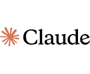
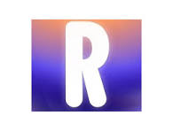
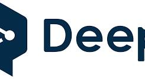

ChatGPT
ChatGPT es un modelo de lenguaje desarrollado por OpenAI. Está diseñado para generar texto de manera conversacional y puede usarse en tareas como redacción, código, tutoría, y más.
¿Qué es ChatGPT?
ChatGPT es una inteligencia artificial creada por OpenAI que puede ayudarte a responder preguntas, redactar textos, resolver dudas, generar ideas, traducir, programar, estudiar y mucho más. Funciona como un asistente virtual con el que puedes hablar en lenguaje natural.
🔗 https://chat.openai.com
Gemini (Google)

Gemini, anteriormente conocido como Bard, es la IA conversacional de Google. Usa modelos de lenguaje avanzados desarrollados por DeepMind.
¿Qué es Gemini?
Gemini es una inteligencia artificial conversacional creada por Google. Funciona de forma similar a ChatGPT, permitiéndote hacer preguntas, generar contenido, resolver dudas, programar, crear ideas, traducir, resumir textos y más, usando lenguaje natural.
🔗 https://gemini.google.com
Claude (Anthropic)
Claude es una IA desarrollada por Anthropic. Se enfoca en ser útil, honesta y segura, y es una alternativa popular en entornos académicos y profesionales.
¿Qué es Claude?
Claude es una inteligencia artificial avanzada creada por la empresa Anthropic. Está diseñada para conversar de forma segura, útil y confiable. Al igual que ChatGPT o Gemini, puedes usarla para resolver dudas, generar contenido, programar, resumir textos, y mucho más.
🔗 https://claude.ai
GitHub Copilot
GitHub Copilot es una herramienta de autocompletado de código, creada por GitHub y OpenAI. Asiste a los programadores sugiriendo líneas o funciones completas mientras escriben código.
¿Qué es GitHub Copilot?
GitHub Copilot es una herramienta de inteligencia artificial que te ayuda a escribir código más rápido y con menos esfuerzo. Funciona como un asistente dentro de tu editor de código (VS Code, JetBrains, Neovim, etc.), sugiriéndote líneas, funciones completas, tests, documentación y más, a medida que escribes.
🔗 https://github.com
Perplexity
Perplexity es una IA enfocada en responder preguntas con fuentes verificadas. Combina lenguaje natural con búsqueda en tiempo real.
¿Qué es Perplexity?
Perplexity AI es un motor de búsqueda conversacional con inteligencia artificial.Combina lo mejor de un chatbot y un buscador web, ya que responde a tus preguntas con información actualizada y fuentes verificables.
🔗 https://www.perplexity.ai
Replika
Replika es un chatbot diseñado para conversaciones emocionales y acompañamiento personal. Se usa como amigo virtual o apoyo emocional.
¿Qué es Replika?
Replika es una inteligencia artificial conversacional diseñada para ser tu compañero(a) virtual. A diferencia de otros chatbots como ChatGPT, Replika se enfoca en relaciones personales, conversaciones emocionales, y desarrollo personal (aunque también puede chatear sobre temas generales).
🔗 Web: https://replika.com
DeepL
DeepL es una herramienta de traducción automática que usa inteligencia artificial para ofrecer traducciones de alta calidad, superando a muchos competidores.
¿Qué es DeepL?
DeepL es un traductor automático potenciado por inteligencia artificial, famoso por su calidad lingüística superior. A diferencia de traductores más genéricos (como Google Translate), DeepL ofrece traducciones más naturales y contextualmente correctas, especialmente en textos largos o técnicos.
🔗 https://www.deepl.com